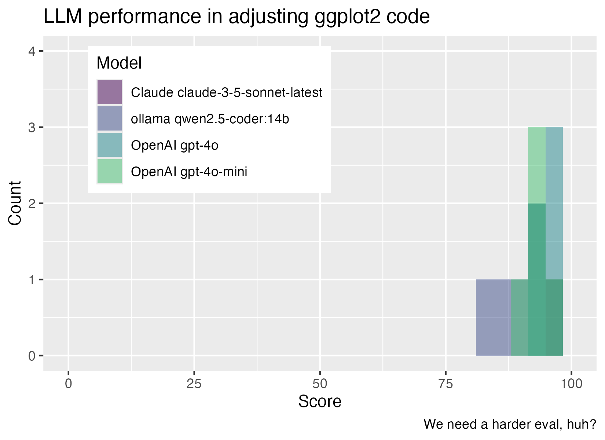

evalthat provides a testthat-style framework for LLM evaluation in R. If you can write unit tests, you can compare performance across various LLMs, improve your prompts using evidence, and quantify variability in model output.
Caution!
This package is very early in its development and much of its documentation is aspirational.
Installation
You can install the development version of evalthat like so:
# install.packages("pak")
pak::pak("simonpcouch/evalthat")Example
evalthat code looks a lot like testthat code. Here’s an example:
function(chat = ellmer::chat_claude()) {
test_that("model can make a basic histogram", {
input <- input(
"Write ggplot code to plot a histogram of the mpg variable in mtcars.
Return only the plotting code, no backticks and no exposition."
)
output <- output(chat$chat(input))
# check that output was syntactically code R code
expect_r_code(output)
# match keywords to affirm intended functionality
expect_match(output, "ggplot(", fixed = TRUE)
expect_match(output, "aes(", fixed = TRUE)
expect_match(output, "geom_histogram(", fixed = TRUE)
# flag output for grading either by yourself or an LLM judge
target <- "ggplot(mtcars) + aes(x = mpg) + geom_histogram()"
grade_output(target)
})
}testthat users will notice a couple changes:
- The testing file is wrapped in
function()with arguments defining variables to evaluateacross. Unlike typical test files, evals are meant to be ran across many configurations to help users compare prompts, model providers, etc. - The functions
input()andoutput()flag “what went into the model?” and “what came out?” - In addition to the regular
expect_*()functions from testthat, the package supplies a number of new expectation functions that are helpful in evaluating R code contained in a character string (as it will be when outputted from ellmer or its extensions). Those that begin withexpect_*()are automated, those that begin withgrade_*()are less-so.
Running the above test file results in a persistent result file—think of it like a snapshot. evalthat supplies a number of helpers for working with result files, allowing you to compare performance across various models, iterate on prompts, quantify variability in output, and so on. On the full ggplot2 example file, we could run 5 passes evaluating several different models for revising ggplot2 code:
library(ellmer)
eval <- evaluate(
"tests/evalthat/test-ggplot2.R",
across = tibble(chat = c(
chat_openai(model = "gpt-4o", echo = FALSE),
chat_openai(model = "gpt-4o-mini", echo = FALSE),
chat_claude(model = "claude-3-5-sonnet-latest", echo = FALSE),
chat_ollama(model = "qwen2.5-coder:14b", echo = FALSE)
)),
repeats = 5
)
Evaluation functions return a data frame with information on the evaluation results for further analysis:
eval
#> # A tibble: 20 × 8
#> chat pct n_fail n_pass timestamp file_hash io problems
#> <chr> <dbl> <dbl> <dbl> <chr> <chr> <list> <list>
#> 1 ollama qwen2.5… 94.4 4 67 20250115… a801f5a8… <named list> <list>
#> 2 ollama qwen2.5… 85.9 10 61 20250115… a801f5a8… <named list> <list>
#> 3 ollama qwen2.5… 91.5 6 65 20250115… a801f5a8… <named list> <list>
#> 4 ollama qwen2.5… 88.7 8 63 20250115… a801f5a8… <named list> <list>
#> 5 ollama qwen2.5… 83.1 12 59 20250115… a801f5a8… <named list> <list>
#> 6 Claude claude-… 100 0 71 20250115… a801f5a8… <named list> <list>
#> 7 Claude claude-… 97.2 2 69 20250115… a801f5a8… <named list> <list>
#> 8 Claude claude-… 100 0 71 20250115… a801f5a8… <named list> <list>
#> 9 Claude claude-… 98.6 1 70 20250115… a801f5a8… <named list> <list>
#> 10 Claude claude-… 100 0 71 20250115… a801f5a8… <named list> <list>
#> 11 OpenAI gpt-4o-… 95.8 3 68 20250115… a801f5a8… <named list> <list>
#> 12 OpenAI gpt-4o-… 94.4 4 67 20250115… a801f5a8… <named list> <list>
#> 13 OpenAI gpt-4o-… 90.1 7 64 20250115… a801f5a8… <named list> <list>
#> 14 OpenAI gpt-4o-… 94.4 4 67 20250115… a801f5a8… <named list> <list>
#> 15 OpenAI gpt-4o-… 94.4 4 67 20250115… a801f5a8… <named list> <list>
#> 16 OpenAI gpt-4o 95.8 3 68 20250115… a801f5a8… <named list> <list>
#> 17 OpenAI gpt-4o 93.0 5 66 20250115… a801f5a8… <named list> <list>
#> 18 OpenAI gpt-4o 95.8 3 68 20250115… a801f5a8… <named list> <list>
#> 19 OpenAI gpt-4o 94.4 4 67 20250115… a801f5a8… <named list> <list>
#> 20 OpenAI gpt-4o 97.2 2 69 20250115… a801f5a8… <named list> <list>Visualizing this example output:
